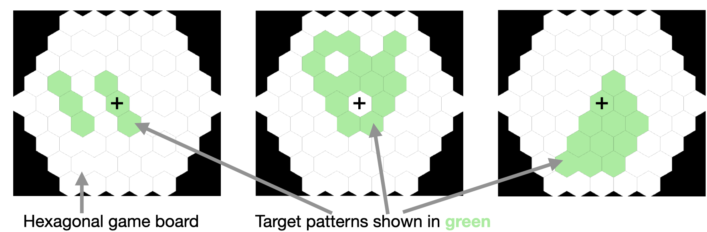
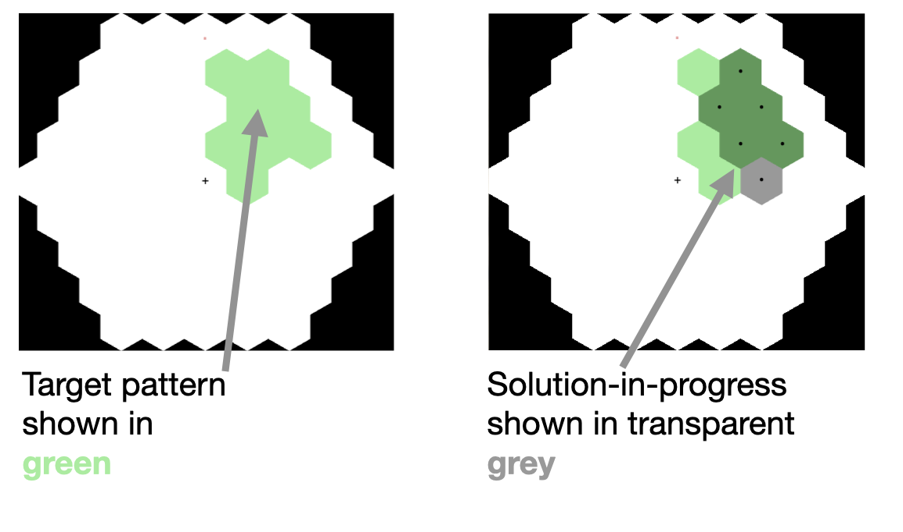

Instructions (Click to hide)
You are a one of a team of scientists working on synthetic protein folding.
Your shared goal is to find a way to replicate target proteins
(shown below as green shapes).

There are 5 basic actions you can use to achieve this:
- a adds a single piece in the center of the board
- d removes any piece in the center of the board
- o rotates all (unlocked) pieces clockwise
- w shift all (unlocked) pieces one space to the West.
- r reflects all tiles horizontally, duplicating them

- Your additions can overlap existing additions.
- Your transformation actions (moving, and rotating and reflecting) affect everything on the board.
- Any pieces that fall off the edge of the board are lost.
- You succeed by covering the green pattern exactly.
- Your the current state of your synthetic protein is shown in gray.
- Use the red dot to track how the board rotates.
Working together:
- Everyone in the team takes turns to contribute actions.
- To be eligible for bonus points, you must contribute at least one action per protein.
- Click Act if you are ready to contribute one or more actions to the current attempt.
- Click Reset if you make a mistake and want to clear the actions you have typed.
- If you do not want to add anything, press Pass.
- If you want to start over, press Vote Restart. A new attempt will be started if everyone votes Restart.
Create your own actions:
- You can create your own action sequence shortcuts by typing a sequence of actions and clicking the "Save" button next to one of the programmable letter keys.
- Once you have saved an action sequence, you can execute it at any time by pressing the corresponding key (e.g. "b" for the first cache, "c" for the second, etc.).
- Use this feature to create your own custom actions that combine multiple basic actions.
- Depending on the version of the task, some saved actions may be shared between players, and some may be private to you.
- Teammates can contribute and use each other's actions! If you propose a shared action, a teammate must vote in favour of it for it to become active.
- Beware: Shared actions can refer private actions. However, their effects may differ other players (if they don't have the same private actions!)
Demo options
- Try procedurally generated target patterns (click here & refresh for new patterns)
- Set the depth of the procedural generation by adding a url "depth" parameter like this
- Include a "pattern" parameter to load your own challenge problem like this
(note, these use K instead of SPACE)
- Navigate to the demo with fixed actions

 ←
← ←
← ←
← ←
←